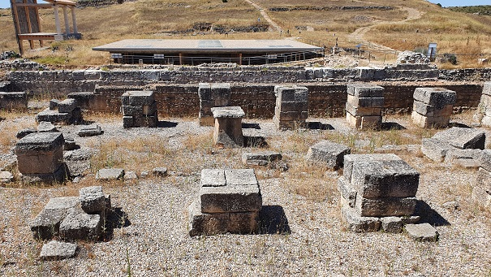
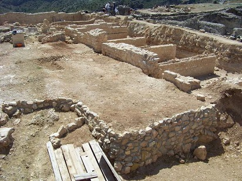
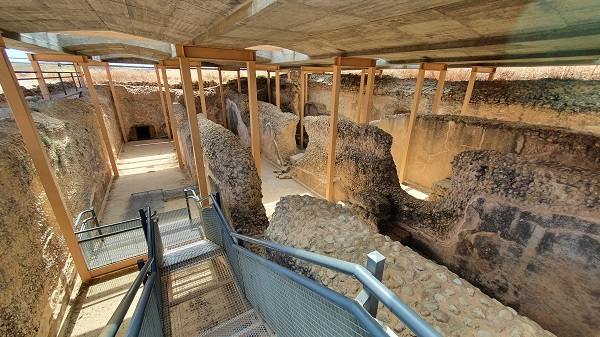
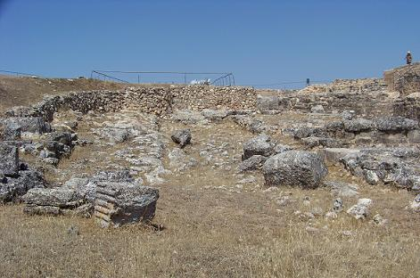
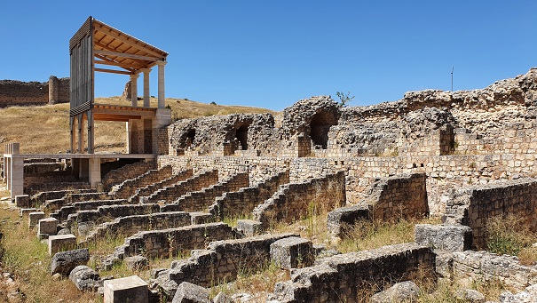
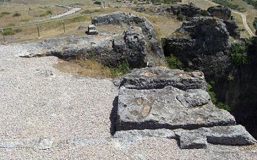
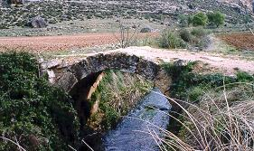
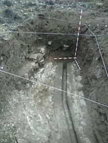

|
Valeria está situada en un bello paraje entre las hoces de los ríos Gritos y Zahorra.
Poblada desde la Edad del Bronce. Antigua ciudad Celtíbera de los Olcades, fundada entre los siglos III o II a.e.c. Fue conquistada en el año 179 a.e.c., por Tiberio Sempronio Graco, al igual que sucedió con Ercávica. No sabemos si fue colonia o municipio, pero lo que sí se sabe gracias a Plinio, es que Roma le concedió el derecho del Lacio Antiguo. Tuvo su esplendor en los siglos II y III; posteriormente fue decayendo. Su riqueza estaba asociada a la minería y sobretodo a la explotación de la industria maderera. La ciudad debe su nombre a Valerio Flaco, procónsul de la Citeriror desde el 93 a.e.c. La ciudad se fundó entorno al 87 a.e.c. En su máximo esplendor se calcula que tenía unos 4.000.- habitantes y se cree que tenía teatro, circo y anfiteatro. Valeria estaba situada en un importante eje viario. Se ha hallado numerosa epigrafía. A principios del 1900 con la construcción de la carretera Cuenca - Valverde, aparecieron los restos de la necrópolis romana y algunos edificios. Las casas del pueblo, al derruirse, en la mayoría aparecen epígrafes funerarios y restos de la antigua ciudad romana; supuestamente cogidos de la excavación para la construcción de la carretera. La basílica está situada al norte del foro en un lateral, fue construida con sillares y estaba formada por tres naves. Al este de la basílica se hallaba la curia. Data de época julio-claudia. En ella se encontró una cabeza de bronce de Marte. Fue arrasada y abandonada en época bajo imperial y se convirtió en un solar de viviendas. Posteriormente la zona se aplanó y se convirtió en una era.
 Se han hallado restos de dos foros. Se supone que el primero seria realizado al iniciar la construcción de la ciudad romana de Valeria y el segundo en época de Tiberio. El foro fue construido en la parte alta de la ciudad y conservaba el estilo del típico foro de una ciudad romana, forma de U, basílica, espacios porticados y tiendas. El foro “viejo” se hallaba bajo el cementerio local. En el siglo III fue reocupado por viviendas.
 Debajo del foro "nuevo" se observan cuatro cisternas, las denominadas Cámaras de Decantación, de 21.5x3x4m, para suministrar agua a la zona este de la ciudad y al ninfeo. Destaca el conducto por donde se suministraba el agua a las cisternas a través de una tubería de plomo. Las cisternas estaban comunicadas entre sí, elaboradas en opus caementicium. Datan de época julio-claudia.

Se han hallado restos de los muros del foro debajo de la basílica y de las
tabernaes del ninfeo.
Al oeste del foro se ha hallado un conjunto de construcciones, la Exedra, formada por el edificio de la exedra, un criptopórtico y la domus pública asociada al gobernador de la ciudad. Se han excavado 8 habitaciones. Los restos conservados corresponden al piso bajo y los cimientos del piso superior. Destacan los huecos donde eran colocadas las vigas y la cámara de aire del techo.
Se conserva parte del trazado del decumanum máximo, por el que se accedía a la plaza del foro.
 El ninfeo, fuente monumental, era uno de los muros de contención del foro y tenía una longitud de unos 105m, de los cuales 80m era propiamente la fuente. Posiblemente uno de los mayores ninfeos del Imperio Romano. Junto a él se ha hallado tabernaes. Está formado por nichos semicirculares donde estarían las ninfas, alternados con exedras rectangulares, y un acueducto que abastecía de agua al ninfeo. Todo estaría recubierto con bello mármol, esculturas y bocas de fuentes adornadas por donde saldría el agua por doce caños sin cesar, que después era reutilizada. Se observa por donde discurrían las tunerías de plomo. Data de época julio-claudia. Entorno al siglo IV dejo de funcionar posiblemente por una avería o rotura del acueducto que la abastecía. Parte del ninfeo se reutilizó como viviendas y la otra se desmontó y se usó como cantera. En febrero de 2019, La Diputación de Cuenca ha acometido la recreación de uno de los nichos y cuerpos principales del ninfeo, permitiendo al visitante hacerse una idea de cómo era el aspecto original. Más de 100 metros de longitud, es la fuente monumental más grande y más antigua de las documentadas en el Imperio Romano Occidental. Aconsejamos ver video de Isaac Moreno Gallo
 Detrás del foro, junto al ninfeo se halla la casa de adobes. Data del siglo II construida sobre una edificación anterior. Fue destruida por un incendio en el siglo IV. Se ha hallado el ajuar domestico, restos de una chimenea, una despensa, un carro ... Con las nuevas excavaciones se ha descubierto una altar con una inscripción "VALENTINUS MINERVAE". Ahora se denomina la Casa de Valentín.
El agua llegaba a la ciudad a través de un acueducto de madera, desde el
paraje de Las Viñas, a escasos kilómetros al norte del yacimiento.
 Las termas romanas de Valeria se descubrieron en 2014/15. Datan del siglo I y que cayeron en desuso en el siglo III. El complejo tenía más de 1000m cuadrados de los que se han excavado unos 250. Se ha descubierto una palestra porticada con columnas, una piscina, una estancia con un mosaico polícromo y una estancia con suelo de mármol. Las paredes estaban recubiertas de mármoles. Se han hallado numerosos restos cerámicos, mármoles, cornisas, hierros, estucos y entre 30.000 y 40.000 teselas.
Se han localizado dos puentes de época romana. En una de las vías romanas que comunicaban Valeria salvando el río Gritos, se localiza este puente romano. Puente romano de un solo ojo que ha perdido el pretil. En las dovelas del tablero del puente se aprecian las huellas del rodaje de carros. Próximo al puente se halla un miliario sin inscripción.

En diciembre de 2012 con los trabajos realizados para la instalación de una estación depuradora en la localidad, los arqueólogos de la empresa conquense Ares Arqueología, han sacado a la luz seis metros de un acueducto romano. Una infraestructura que podría datar del siglo I. Los arqueólogos ya conocían que debajo de este terreno existía dicho acueducto. Fue descubierto en 1974 y vuelto a tapar, aunque en aquella ocasión solo salieron a la luz un metro y medio. Foto: EUROPA PRESS.

El puente Chumillas
del siglo XVI. Se ha hallado un trozo de lauda funeraria romana usada como
sillar del arco del puente.
|
||||||||||